Lamba3D elektronik
Merhaba Meraklı dostlar…
Giriş
Burada Lamba3D projemin elektronik işlerinden bahsetmek istiyorum. Projenin bu bölümü mekanik ve yazılım bölümü gibi sürekli değişim halinde ancak bunları da en başından anlatmak istiyorum.
1.Bölüm
Projemde bulunan elektronik elemanları ihtiyaç oldukça bir Çin alışveriş sitesi olan aliexpress ten, bir kaç seferde sipariş ettim. Şimdiye kadar kullandığım elektronik elemanların listesi şöyle;
1 adet Arduino UnoR3 – İlk denemelerimi yaptığım kart
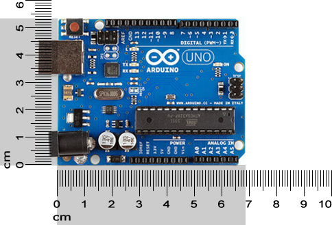
1 adet Arduino Pro Mini Atmega328 5 V – Projemin son halinde bu kartı kullanıyorum
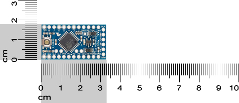
1 adet USB TTL CH340G adaptör – Arduino Pro Mini’ yi PC nin USB portundan programlayabilmek için olmassa olmazı
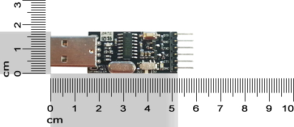
2 adet Servo Motor Sg-90 – Bir tanesini 360 derece (sürekli dönebilen) servo yaptım 🙂 Bu da ayrı bir proje konusu.
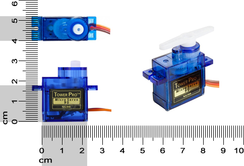
1 adet Bluetooth modül HC-05 – Projemin son halinde uzaktan kumanda için alıcı devresi olarak kullanıyorum
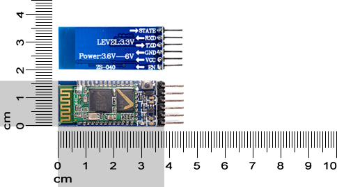
1 adet Potansiyometre 10 K – İlk denemelerimde kullanmıştım
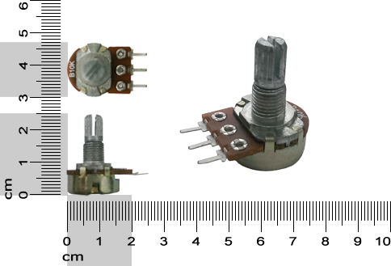
1 adet Röle 5V / 220V – Projemin son halinde lambayı açıp-kapatmak için kullanıyorum
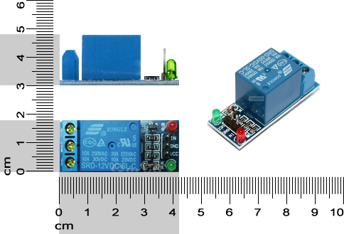
1 adet 5V / 220V 700 mA Trafo (adaptör) – Şehir elektriğini (220V) kullanabilmemi sağlıyor
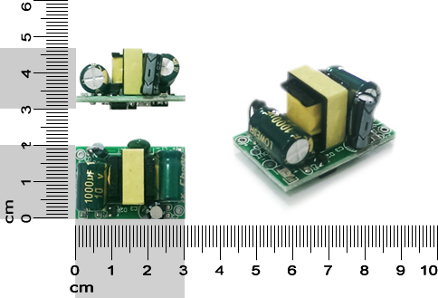
1 adet Sarı LED 5mm 3V – Denemelerimde röleyi test için kullanmıştım
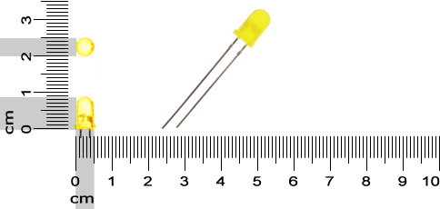
1 adet Direnç 220 ohm – LED’ i kullanırken, karttan LED’ e gelen 5V u düşürmek için
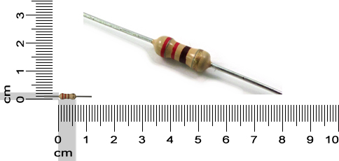
1 adet Bluetooth özelliği olan cep telefonu 🙂
kabloları saymıyorum.
2.Bölüm
Bu elemanlarla sırasıyla Lamba3D projem için işe yarar yaramaz neler yaptığımı şemalarla anlatmaya çalışayım…
1. safha
Arduino UNO R3 kart ile neler yapabileceğimi ve nasıl kullanabileceğimi anlamak için, kartı PC ye bağlayıp tanıtmam gerektiğini düşünüyordum. PC ye bağladım, Arduino IDE yazılımını kurdum ama ekstradan tanıtmama gerek kalmadan PC Arduino’ yu tanıdı. Eğer tanıtma ile ilgili sorun yaşıyorsanız bu veya şu adresi bir ziyaret edin derim…
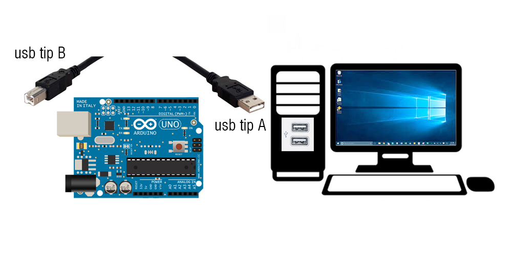
USB kablo ile Arduino’ yu PC ye bağlandığımızda hem data alışveriş işini hem de kart için gerekli olan elektrik işini halletmiş oluyoruz.
Arduino sitesinden güncel yazılımı indirip böyle kuruyoruz.

Kurulumun videosu için https://youtu.be/BMN-asNMIs0
Kurulum işlemini sorunsuzca hallettikten sonra hemen test aşamasına geçelim. Eğer sorun yaşıyorsanız lütfen bana yazın, elimden geldiğince yol göstermeye çalışayım…
Kartımıza ilk programımızı yükleyip kartımızın PC ile iletişimde olup olmadığını ve ne yapabildiğimize bakmaya başlayabiliriz…

İlk programım kart üzerindeki mevcut led’i yakıp söndürmek oldu 🙂
2. safha
Projemizde gerekli olan hareketi oluşturabilmek için, servo motor kullanmamın doğru olacağını düşünüyorum. Servo motorların 360° (sürekli dönen) ve 180° dönebilen türleri var. İçindeki devre sayesinde, dönüş açıları daha rahat kontrol edilen 180° dönebilen modeli tercih ettim. Ayrıca oldukça da küçük. Sorun yaşarsam başka motor türlerini de deneyebilirim…
Şimdi istediğim açılarda servoyu nasıl kontrol edebilirim. İnternetteki araştırmalarımdan, bu kontrolün en kolay potansiyometre ile olacağını gördüm. Elimde uygun potansiyometre, servo ve arduino da var. Şöyle bir bağlantıyla servoyu kontrol etmeyi başardım.
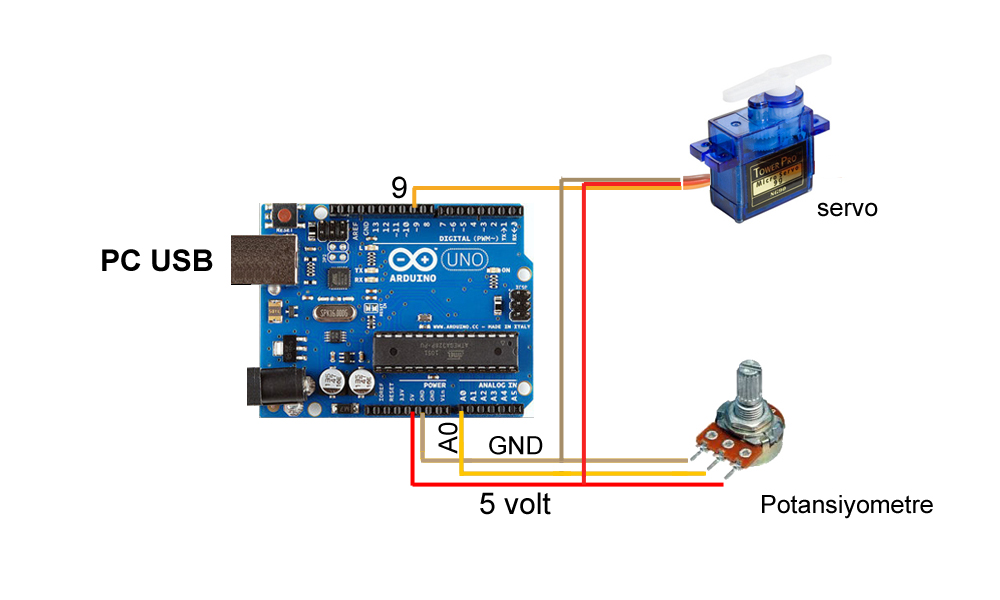
Potansiyometre ile servoyu istediğim açıda çevirebiliyorum.
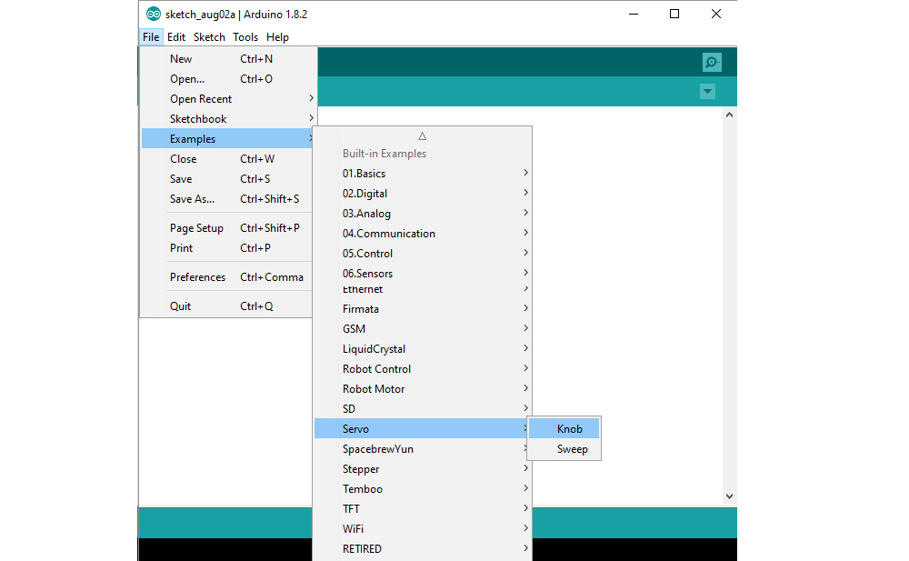
Servoyu potansiyometre ile kontrol etmek için Arduino’ daki örnek programı kullandım.
Bu devreyi ilk Lamba3D denememin içine yerleştirip böyle çalıştırdım.
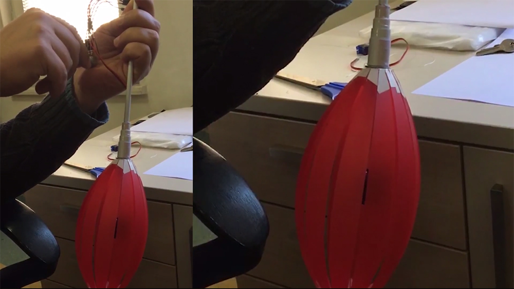
3. safha
Kontrolü kablosuz, bluetooth ile yapmaya başlayabilirdim. Devrede biraz değişiklik yapmam gerekecek…
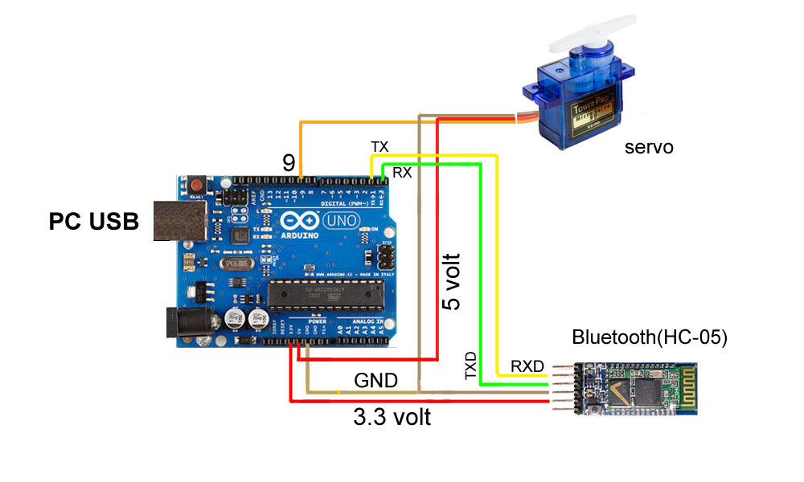
DİKKAT, Bluetooth RXD pini, Arduino nun TX pinine. Bluetooth TXD pini, Arduino nun RX pinine bağlanacak.
Bu devreyle ve yazılımla telefonumdan gelen komutları servoyu kontrol etmek için kullanabiliyordum. Artık uzaktan erişim işini çözdüm sayılır…
4. safha
Servo kontrolü ile beraber projemdeki Lambayı açıp kapatma işini halledebilir miydim acaba. Lamba yerine şimdilik bir led ve röle ile devreme ilaveler yapmalıyım. Sonuç başarılı olursa 220 V ile 5 V elde edip devremi PC den bağımsız ve gerçek bir ampül ile test etmeye başlayabilirim…
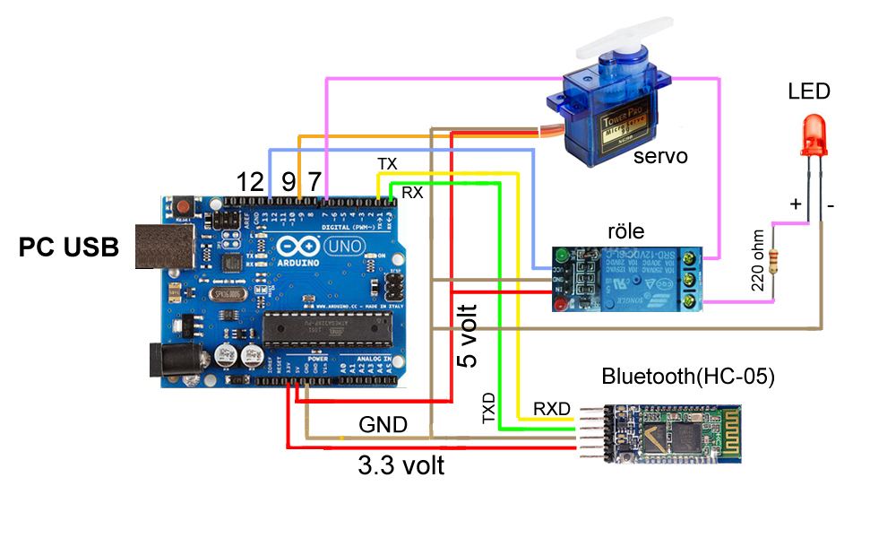
Arduino’ nun 12 ve 7 numaralı pinlerini de kullandım. Devre biraz karışık olmaya başladı… Röleyi dışarıdan 5 volt ile beslemek belki daha iyi olacak. Karta fazla mı yüklendim acaba 🙂 DİKKAT
5. safha
devam edecek…
İlk yayın: https://pointpointblog.wordpress.com/2017/06/23/lamba3d-elektronik/
Yorumlar (1)
Yorumlar blogun ilk yayınından arşivlenmiştir; yeni yorum alınmıyor.
[…] Projemizin elektronik ile ilgili bölümü için; […]